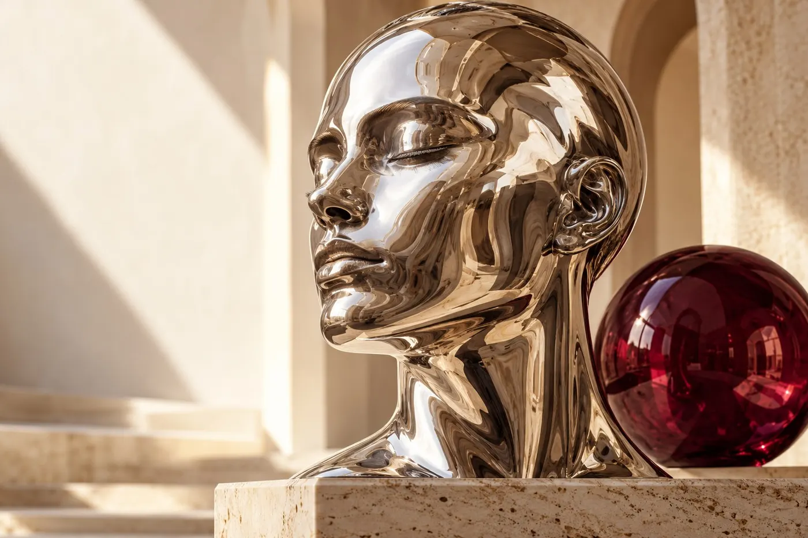
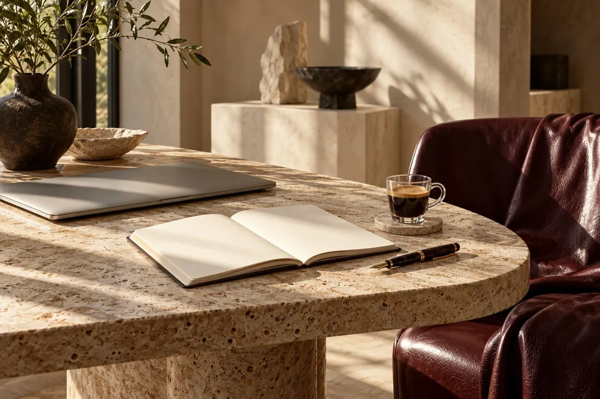
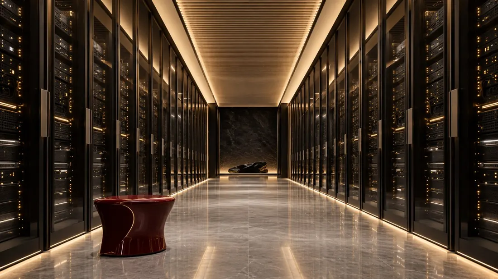
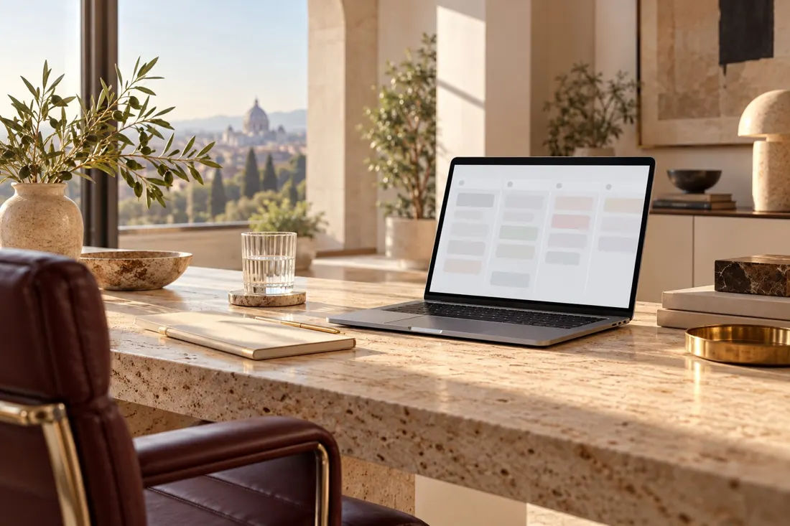
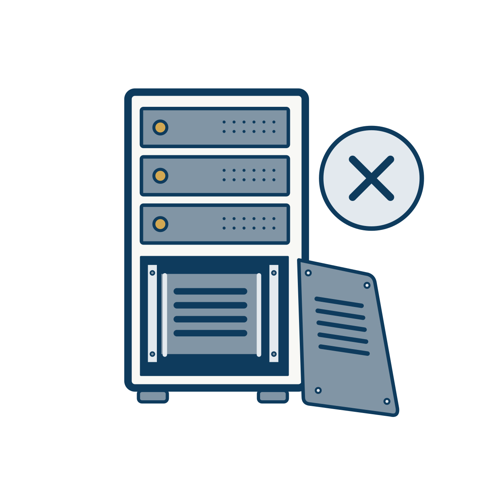

Бренд, который читают, а не пролистывают.
Falcon Journal показал, что нам идёт спокойная редакционная подача: бумага, чернила, крупная антиква и один цвет для голоса. Здесь это переложено на продукты и интерфейсы.
Что именно взятоЧерновик. Действующую систему 0.2 и продукты он не меняет, пока Юрий не решит.

Четыре правила, по которым принимается любое решение
Сначала текст
Страница начинается с одной мысли, набранной крупно. Картинка и кнопка идут следом. Если мысль не помещается в заголовок, её ещё нет.
Один голос
Бордовый говорит от имени Falcon: главная кнопка, ключевая строка, цитата. На экране он один. Янтарь остаётся сигналом: глаз сокола и то, что происходит прямо сейчас.
Линия вместо коробки
Блоки разделяет тонкая линия и воздух. Рамка, тень и заливка нужны только там, где элемент можно нажать или где лежат данные.
Честная подпись
У каждого изображения подпись: что это и откуда. Работу ИИ называем работой ИИ, макет называем макетом.
Знак прежний. Меняется то, на чём он стоит
Сокол и надпись Falcon AI остаются как в версии 0.2. Новое: три разрешённых фона и одно правило про поля.
Поле со всех сторон равно x, высоте знака. В него не заходят текст, край макета и другие знаки. Минимальная ширина: 96 px на экране, 24 мм в печати; меньше ставим только знак.
Чернила на бумаге. Основной вариант.
Бумага на чернилах.
Бумага на бордовом: обложки, аватар.
На фото только поверх затемнения 60%.
Не красим знак в бордовый или янтарь.
Не растягиваем и не сжимаем.
Не ставим на янтарь и на пёстрый фон.
Не набираем название шрифтом вместо знака.
Бумага, чернила и один бордовый
Палитра журнала почти без изменений, плюс тёмная тема, которой у журнала нет. Янтарь из версии 0.2 не исчезает, но перестаёт быть главным.
Доли на экране
Бумага 70%, чернила 20%, тон 6%, бордовый 3%, янтарь не больше 1%. Если бордового на экране больше одной кнопки и одной строки, акцент перестаёт работать.
Тёмная тема
Ночь, приподнятый лист, бордовый для кнопок и розовый для акцентного текста: бордовый #6D1D2B на тёмном не читается. Переключатель темы — в шапке.
Контраст (WCAG 2.1)
Антиква для мысли, гротеск для работы
Журнал набран Georgia и Arial: системные шрифты, в продуктах они выглядят случайно. Берём приём, а шрифты ставим свои, с кириллицей и открытой лицензией.
Source Serif 4
АаБбВвГгДдЕеЖж курсив
0123456789 № « » — ў қ ғ ҳ
Вариативный, оптические размеры 8–60, кириллица, включая узбекскую. SIL OFL 1.1.
IBM Plex Sans
АаБбВвГгДдЕеЖж
IBM Plex Mono 0123
Как в версии 0.2, файлы те же. SIL OFL 1.1.
Serif 400 · 40–84 / 1,02 · −2,8%
Работа, которую видно
Serif 400 · 32–52 / 1,08 · −2,2%
Каждый сотрудник получает своё рабочее место за минуту
Serif 400 · 24–32 / 1,18
Отчёт за день приходит в 19:00
Serif 400 · 18–21 / 1,5
Вводка пересказывает материал двумя предложениями. Её читают все, остальное читают те, кому надо.
Sans 400 · 16 / 1,65 · до 68 знаков
В интерфейсе и на сайте основной текст набран гротеском: он ровнее в мелком кегле и в таблицах. В длинных статьях (от трёх экранов) основной текст можно набрать антиквой 18 / 1,7.
Sans 600 · 17 / 1,35
Настройки уведомлений
Sans 600 · 11 / 1,3 · +14% · прописные
Искусственный интеллект
Mono 400–500 · табличные цифры
1 284,50 $ · 12.11.2026 · app_f524c3 · 99,98%
Курсив с цветом — один раз
Приём журнала: последняя строка заголовка курсивом и бордовым. Он работает, пока редок. Разрешён в одном заголовке на страницу, на обложке слайда и в посте. В интерфейсе продукта не используется.
Рубрика — тоже один раз
Мелкие прописные с разрядкой называют раздел, к которому относится блок. Над каждым заголовком их не ставим: рубрика без смысла превращается в украшение. Прописными длиннее трёх слов не набираем.
Мелочи набора
Кавычки «ёлочки», внутри „лапки“. Тире длинное с пробелами, в диапазонах короткое без пробелов: 9–18. Цифры в таблицах табличные. Неразрывный пробел после предлогов и перед единицами: 12 ГБ.
Tektur
Шрифт заголовков версии 0.2 в новой версии из заголовков уходит. Остаётся в уже выпущенных продуктах до их перевода. Это предложение, решение за Юрием.
Двенадцать колонок, шаг четыре, много воздуха
Журнал держится на асимметрии: узкая колонка текста рядом с широкой картинкой. Это переносится на сайт и презентации. В интерфейсе сетка прежняя.
1440: 12 колонок, поля 48, промежуток 24, ширина контента до 1320. 768: 8 колонок, поля 28. 390: 4 колонки, поля 20, промежуток 16.
Отступы
Внутри блока 4–16, между блоками 24–32, между разделами 72 и больше. Раздел отделяется линией и воздухом, а не цветом фона.
Линии и углы
Линия толщиной 1 px двух видов: чернильная открывает раздел и держит навигацию, светлая разделяет строки. Скругление 2 px у кнопок, полей и меток; у изображений и листов углы прямые. Теней нет. Исключение — всплывающие окна в интерфейсе: им тень нужна, чтобы отделиться от страницы.
Предмет в дневном свете и линейный рисунок для интерфейса
Два рода изображений, у каждого своё место. Смешивать их в одном блоке нельзя.



Обложки: сайт, презентации, посты, письма
Один предмет или сцена, тёплый дневной свет, камень, металл, бордовая деталь. Без текста внутри картинки; если в кадре экран, интерфейс на нём размыт. Формат 3:2 или 16:9, обрезка прямоугольная. Подпись обязательна; если картинку сделал ИИ, так и пишем.
Фотографии людей
Только настоящие снимки настоящих сотрудников и клиентов, с их согласия. Сгенерированных портретов не используем; условная скульптура на обложке — не портрет. Свет дневной, фон спокойный, обработка без фильтров.

Интерфейс: пустые состояния, подсказки, ошибки. 128 иллюстраций FAI из версии 0.2 остаются без изменений; в редакционных макетах они не используются.
Говорим как редактор: коротко, по делу, с фактами
Журнал пишет спокойно и конкретно. Тот же тон в продукте: называем, что произошло и что делать дальше.
Отчёт за день приходит в 19:00. В нём задачи, время и расход на ИИ по каждому сотруднику.
Революционная аналитика продуктивности нового поколения.
Оплата не прошла: банк отклонил карту. Попробуйте другую карту или Apple Pay.
Упс! Что-то пошло не так. Повторите попытку позже.
Здесь появятся заявки. Первая придёт, когда клиент заполнит форму на сайте.
Нет данных.
Сохранить изменения
ОК
Правила
Одна мысль в предложении. Глагол в действительном залоге. Число вместо оценки: «за 40 секунд», а не «быстро».
Кнопка называет действие, и после нажатия оно называется так же: «Опубликовать» → «Опубликовано».
Без восклицательных знаков, без «мы рады», без эмодзи в интерфейсе. К человеку обращаемся на «вы».
Языки продуктов: русский, английский, узбекский. Тон на всех один.
Шесть носителей, одна система
Все макеты ниже собраны из токенов этой страницы. Тексты и цифры условные.
Рабочее место с ИИ для каждого в команде
Изолированный компьютер в браузере, отчёт за день и выкатка в один клик.
Запросить доступСайт. Чернильная линия под шапкой, текст 5 колонок, картинка 7. Одна бордовая кнопка на экран.
- Обзор
- Задачи
- Выкатка
- Отчёты
- Команда
Обзор
- Connector14:02Выкачено
- Falcon KYC14:20Идёт
- Nasib13:41Выкачено
Приложение. Антиква только в заголовке экрана и крупных числах. Остальное гротеск. Янтарь — статус «идёт».
Презентация, обложка 16:9. Бордовый фон только на обложке и разделителях.
Слайд с цифрой. Одна мысль на слайд, число антиквой, пояснение одной фразой.
Интеллект — это ремесло, а не волшебство
Пост 1:1, текстовый.
Новый выпуск: как мы строим продукты
Пост 1:1, с обложкой. Текст только поверх затемнения.
Аватар отправителя и соцсетей. Только знак, без надписи. Основной — бумага на бордовом: его видно в списке чатов и в светлой, и в тёмной теме телефона. Знак занимает 64% диаметра.
Проверенный отправитель
RCS. Заголовок карточки до 40 знаков, две кнопки, вторая всегда «Отписаться». Цвет кнопок задаёт бордовый бренда.
Ваше рабочее место готово
Здравствуйте, Тимур. Мы создали для вас рабочее место в Falcon Work. Войдите по кнопке ниже: ссылка действует 24 часа.
Войти в Falcon Work
Письмо. Ширина 560, один заголовок, одна кнопка. В почтовых клиентах антиква заменяется на Georgia, гротеск на Arial: шрифты в письма не встраиваем.
Журнал — издание. Бренд — продукты. Переносится не всё
Полный разбор со снимками — в docs/brandbook-next.md.
| Приём | В журнале | В версии 0.2 | В версии 0.3 | Решение |
|---|---|---|---|---|
| Фон и текст | Тёплая бумага #F7F5F0, чернила #20211E | Холодный холст #F3F4F2, тёмные острова | Бумага #F6F3EC, чернила #1E1F1C | Берём |
| Акцент | Бордовый #6D1D2B, один | Янтарь #FFB020 | Бордовый — голос, янтарь — сигнал | Спорно |
| Заголовки | Georgia, крупно, плотная разрядка | Tektur | Source Serif 4 | Спорно |
| Текст и интерфейс | Arial 13 px | IBM Plex Sans 16 px | IBM Plex Sans 16 px | Не берём |
| Линии | Волосные, чернильная у навигации | Карточки, скругления, тени | Линии; рамки только у нажимаемого | Берём |
| Рубрики | Прописные 9–10 px над каждым блоком | Нет | 11 px, одна на блок, не над каждым заголовком | Берём с правкой |
| Курсив в заголовке | Последняя строка, бордовый | Нет | Один раз на страницу, не в интерфейсе | Берём с правкой |
| Изображения | Предметы в дневном свете, подпись «AI illustration» | 128 линейных иллюстраций FAI | Оба рода, у каждого своё место | Берём |
| Шапка-титул | Название 104 px по центру | Нет | Только сайт компании и брендбук | Не в продукты |
| Тёмная тема | Нет | Есть | Есть, тёплая | Сохраняем |
| Мелкий кегль | Текст 13, подписи 9 px | От 12 px | Текст 16, подписи от 12 px | Не берём |
Что откуда и на каких правах
| Материал | Правообладатель | Лицензия | Коммерческое использование |
|---|---|---|---|
| Source Serif 4 | Adobe | SIL OFL 1.1 — текст | Разрешено |
| IBM Plex Sans, Mono | IBM Corp. | SIL OFL 1.1 — текст | Разрешено |
| Логотип, иллюстрации FAI | Falcon AI | Собственные | Свои |
| Четыре обложки | Falcon Journal (Falcon AI) | Собственные, созданы ИИ | Свои; см. оговорку ниже |
Оговорка: изображения, целиком созданные ИИ, в США могут не охраняться авторским правом. Использовать их можно, запретить копирование другим — возможно, нельзя. Каким сервисом они сделаны и что говорят его условия, в репозитории журнала не записано; это нужно уточнить до печати и рекламы. Подробно — NOTICE.md.